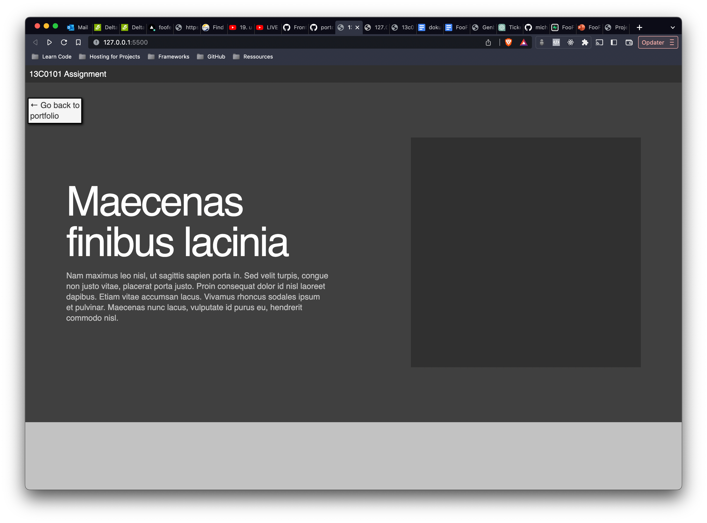

PROJECT 13C0101

Go to full page
The Project
This project was about font hierachy and we used different fonts.
The solution
I used the fonts Source Sans Pro & Open Sans in this project.
I wanted to use "clean" and simple fonts, but that still works very well for a modern design.
Simple design as the work was mostly about fonts and use of them. I did pull some api data from people.json file and populate the cards.